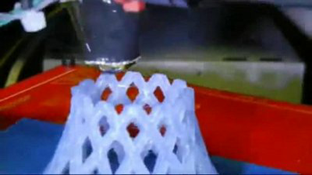

3D-Drucker
Dieser Artikel wurde für die folgenden Ubuntu-Versionen getestet:
Ubuntu 14.04 Trusty Tahr
Zum Verständnis dieses Artikels sind folgende Seiten hilfreich:
Mit 3D-Druckern kann man dreidimensionale Objekte herstellen. Dabei können verschiedene Programme zur Modellierung sowie verschiedene Herstellungsverfahren genutzt werden.
Für den Heimgebrauch hat sich vor allem das Fused Deposition Modeling durchgesetzt. Des Öfteren tritt auch der Begriff "Fused Filament Fabrication" auf, wobei FDM eine eingetragene Marke von Stratasys Inc. ist.
Dabei wird beim Drucken ein erhitzter Kunststoff durch eine Düse gepresst und schichtweise auf dem Bett des 3D-Druckers aufgetragen, bis das gewünschte Objekt fertig ist. Die Dauer des Druckvorgangs muss zudem relativ betrachtet werden: Alles, was man mit herkömmlichen Maschinen (durch Drehen und Fräsen) oder gar durch Massenproduktion herstellen könnte, ist für 3D-Drucker unrentabel. Der Druckvorgang dauert dafür zu lange. Geht es aber um Einzelanfertigungen, Prototypen oder organische Formen, künstlerische Designs oder ähnliches, gibt es aktuell nichts besseres als einen 3D-Drucker.
Begriffserklärungen¶
Nur ein paar Begriffe, die eventuell zum Verständnis nötig sind:
| Begriff | Erklärung |
| Slicer | Software, die das Objekt in einzelne Layer unterteilt |
| Layer | Die einzelnen Schichten des Objekts, welches gedruckt werden soll |
| Nozzle | Die Düse, welche zum Drucken verwendet wird. Für gewöhnlich 0,3 oder 0,5mm groß. |
| Hot End | Die heiße Seite der Düse, mit der gedruckt wird |
| Heatbed | Ein beheiztes Druckbett |
| Filament | Das Material, mit dem gedruckt wird, meist aufgewickelt als Rolle. Das Filament besteht für gewöhnlich aus PLA oder ABS, es gibt aber auch spezielle Mischungen, mit dem man ein holzähnliches Material erhält oder auch leitfähige Kunststoffe. Anstelle der herkömmlichen Filamentzuführung kann man auch mit Spritzen arbeiten, um so zum Beispiel Keramik zu drucken, oder einem beheizten Trichter, um mit Schokolade drucken zu können. |
| Extruder | Der Druckkopf, beinhaltet das Hot End sowie die Kühlung |
Übersicht verschiedener 3D-Drucker¶
3D-Drucker gibt es in allen möglichen Variationen. Die Günstigsten gibt es dabei ab etwa 500 Euro als Bausatz bis etwa 3500 Euro fertig zusammengebaut und kalibriert. Die hier vorgestellten Drucker können zudem alle unter Ubuntu bzw. Linux betrieben werden.
| Gerät | Bauvolumen BxTxH | Beschreibung | Host-Software |
RepRap - Mendel  | 200x200x140mm | Der 2. verfügbare RepRap, Nachfolger von Darwin . Bastler-Know-How erforderlich, dafür relativ günstig. | Printrun (bzw. Pronterface) mit Skeinforge, alternativ Slic3r |
| RepRap - Huxley | 140x140x110mm | Der 3. verfügbare RepRap, ein sogenannter Mini-Mendel. Wird parallel zu Mendel weiterentwickelt, Bastler-Know-How erforderlich, aktuell günstigster verfügbarer 3D-Drucker. | Printrun (bzw. Pronterface) mit Skeinforge, alternativ Slic3r |
| Ultimaker 2 | 230x225x205mm | Fork des RepRaps, wird als komplett zusammengebautes Gerät geliefert. Firma arbeitet nach der Open-Source-Philosophie : Hard- und Software frei zugänglich, kommerzielle Nutzung allerdings eingeschränkt. | Cura |
| Makerbot | mehrere Größen | Mehrere fertige Geräte mit Zubehör im Programm. Aus der Open-Source-Szene entstandener Hersteller. Ist jetzt kommerzielles Unternehmen. | MakerWare™ |
Vellemann K8200  | 200x200x200mm | Abgewandeltes Modell eines RepRap, relativ günstig zu erwerben | Repetier |
RepRap¶
|  |
| Quelle und Link zum Video: wikipedia |
Die meisten Geräte, auch die kommerziell vertriebenen, benutzen als Basis die RepRap-Maschinen von Adrian Bowyer , der die Drucker als sich selbst replizierende Maschinen (RepRap - Replicating Rapid Prototyper) konstruierte und sie unter die GPL-Lizenz stellte, um ihre Verbreitung zu fördern.
Aktuell gibt es 3 verschiedene Versionen sowie unzählige Abspaltungen und Modifikationen des Originaldesigns. Die erste Version (Darwin) wird nicht mehr weiterentwickelt, Mendel sowie Huxley dagegen werden parallel entwickelt. Mendel besitzt ein größeres Bauvolumen und ist leichter zu erweitern als Huxley. Huxley passt dafür bequem auf einen Schreibtisch, ohne zu stören. Das RepRap-Projekt selbst verkauft aber weder Bauteile, Bausätze noch fertige Drucker, sondern macht dies in Kombination mit anderen Firmen. Natürlich gibt es auch Firmen, die RepRaps unabhängig vom Projekt vertreiben.
Inbetriebnahme eines RepRaps¶
Hinweis:
Die hier vorgestellte Inbetriebnahme ist speziell für den RepRapPro Huxley. Die Anleitung kann aber auch für andere RepRap-Modelle genutzt werden, wobei gegebenenfalls die Links zu den Downloads angepasst werden müssen.
Zuerst muss man ein paar Pakete installieren, damit die Printrun-Software funktioniert:
python-serial
python-wxgtk2.8 (universe)
python-pyglet (universe)
python-tk (nur wenn Skeinforge anstelle von Slic3r verwendet werden soll)
 mit apturl
mit apturl
Paketliste zum Kopieren:
sudo apt-get install python-serial python-wxgtk2.8 python-pyglet python-tk
sudo aptitude install python-serial python-wxgtk2.8 python-pyglet python-tk
Des Weiteren muss man selbst der Gruppe dialout angehören, da es sonst zu Problemen mit den Berechtigungen kommt.
Die Printrun-Software kann nun mittels git heruntergeladen werden:
git clone https://github.com/kliment/Printrun
Wer anstelle des in Printrun integrierten Slicers Skeinforge lieber Slic3r verwenden möchte, kann dieses Programm über die offizielle Webseite herunterladen  . Dabei muss man auf die richtige Architektur achten (32-/64-Bit).
. Dabei muss man auf die richtige Architektur achten (32-/64-Bit).
Konfiguration von Slic3r¶
Nachdem man das Archiv heruntergeladen und entpackt hat, startet man Slic3r über Slic3r/bin/slic3r. Beim ersten Start erscheint ein Konfigurationsassistent, bei dem folgende Werte eingetragen werden müssen (die Temperaturangaben sind für Filament auf PLA-Basis ausgelegt):
Firmware Type: RepRap (Marlin/Sprinter)
Bed Size: x:140 y:140mm
Nozzle Diameter: 0.3mm
Filament Diameter: 1.75mm
Extrusion Temperature: ~185°C
Bed Temperature: ~65°C
Anschließend kann man über die Schaltfläche "Add..." ein oder mehrere STL-Dateien hinzufügen und via "Export G-code..." den G-Code exportieren.
Konfiguration von Pronterface¶
Pronterface ist Bestandteil von Printrun und kann direkt über das zuvor heruntergeladene Git-Repository gestartet werden. Unter Umständen kann es vorkommen, dass die Baudrate nicht stimmt und somit keine Verbindung zum Drucker aufgebaut werden kann (die Einstellung sollte auf 115200 Baud stehen).
Nun kann mit dem ersten Druckvorgang begonnen werden. Zuerst lädt man die zuvor exportierte G-Code-Datei, anschließend verbindet man sich mit dem Drucker und startet mit einem Klick auf "Drucken" den Druckvorgang.
Links¶
Intern¶
Cura - Slicer und Print-Hoster
Blender - für organische Modellierung
CAD-Programme für Linux bzw. Ubuntu
Extern¶
3D-Drucker im Aufbau und in Aktion
- c't 11/2012, S. 92Räumlich scannen mit Digitalkamera, Kinect oder Laser-Scanner
- c't 11/2012, S. 86Thingiverse
- frei downloadbare Objekte zum DruckenYouMagine
- noch mehr frei downloadbare Objekte zum Drucken
- Erstellt mit Inyoka
-
 2004 – 2017 ubuntuusers.de • Einige Rechte vorbehalten
2004 – 2017 ubuntuusers.de • Einige Rechte vorbehalten
Lizenz • Kontakt • Datenschutz • Impressum • Serverstatus -
Serverhousing gespendet von